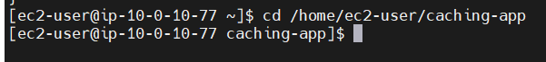
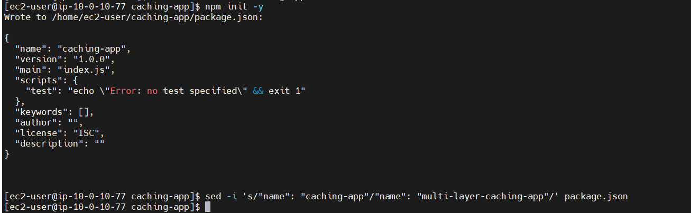
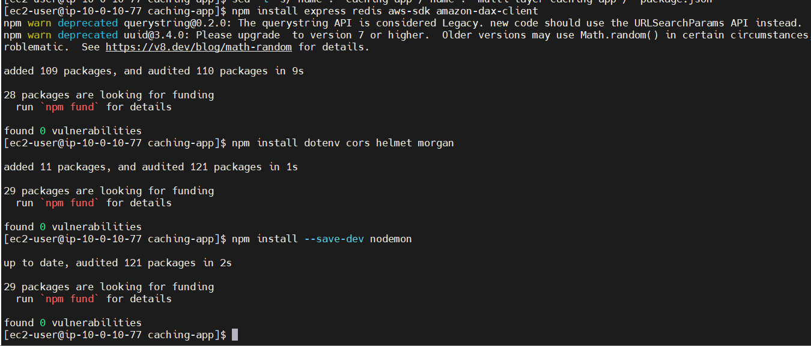
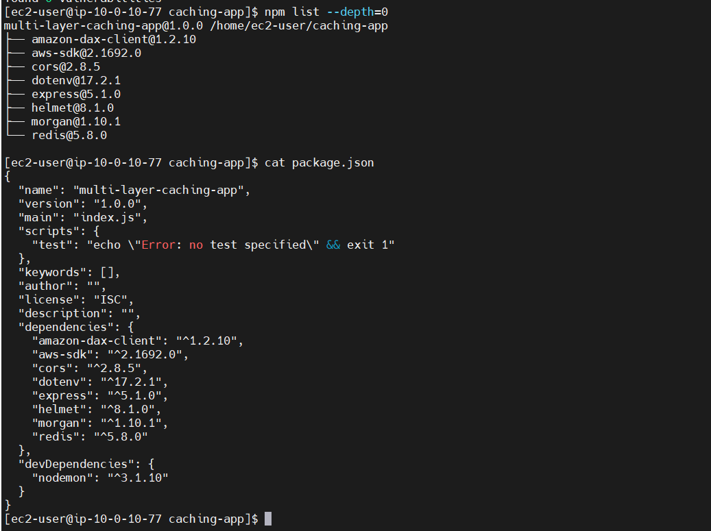
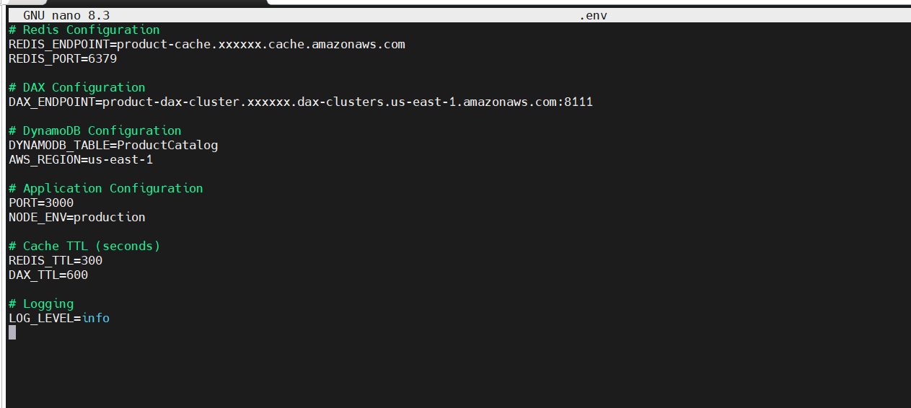
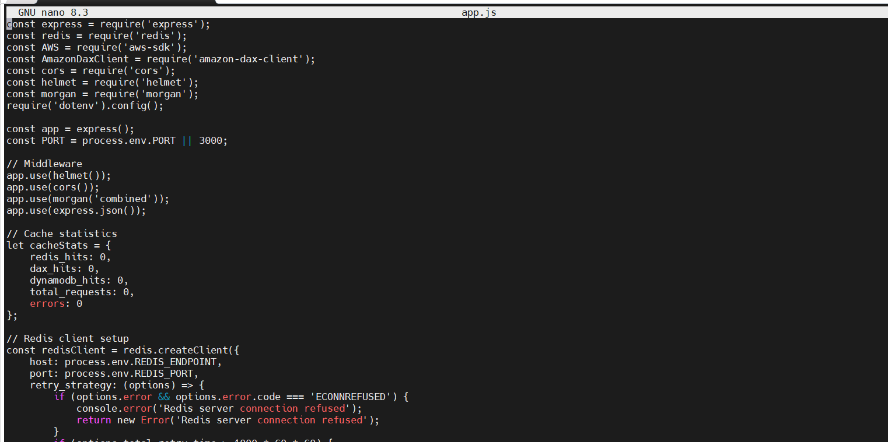
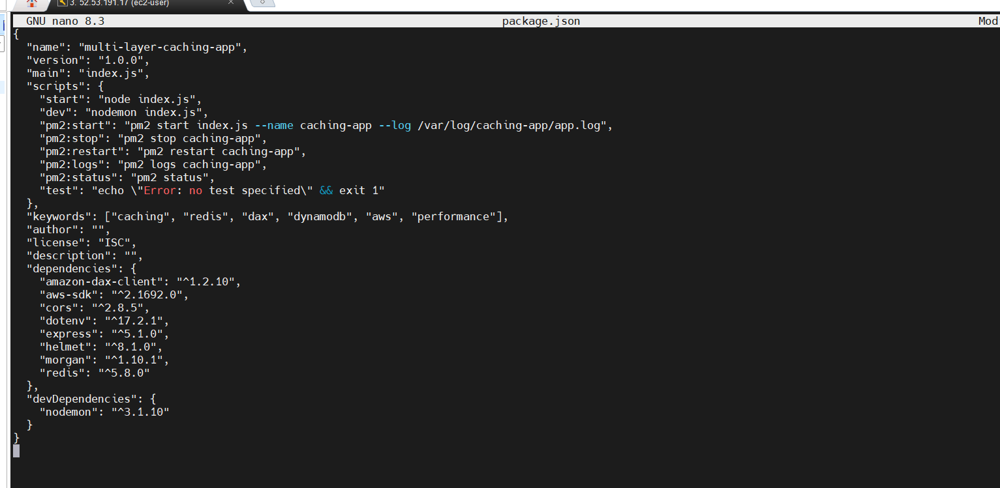
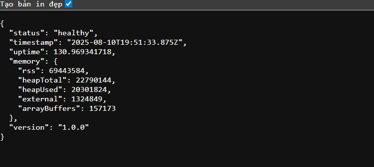
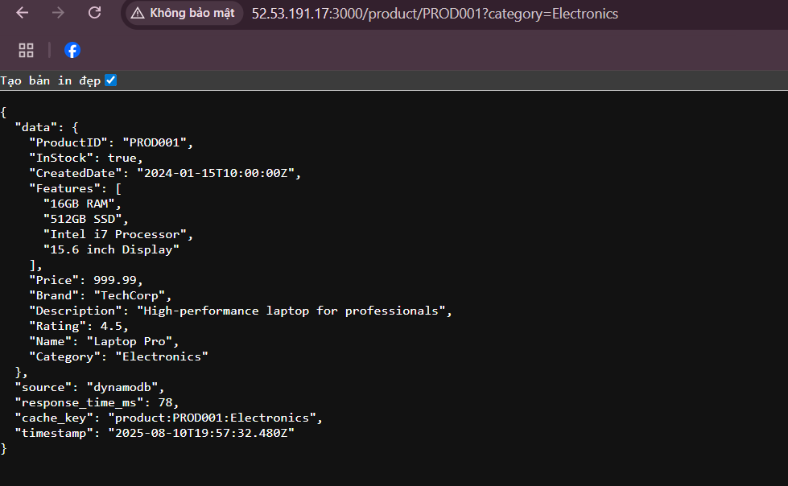
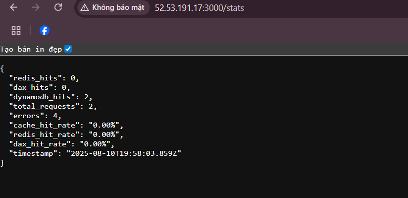

Trong bước này, chúng ta sẽ triển khai ứng dụng Node.js triển khai chiến lược multi-layer caching. Ứng dụng sẽ minh họa cách sử dụng hiệu quả Redis, DAX, và DynamoDB cùng nhau.
cd /home/ec2-user/caching-app

# Initialize package.json
npm init -y
# Update package.json name
sed -i 's/"name": "caching-app"/"name": "multi-layer-caching-app"/' package.json

# Core dependencies
npm install express redis aws-sdk amazon-dax-client
# Utility dependencies
npm install dotenv cors helmet morgan
# Development dependencies
npm install --save-dev nodemon

# List installed packages
npm list --depth=0
# Check package.json
cat package.json

.env file với configuration của bạn:nano .env
# Redis Configuration
REDIS_ENDPOINT=product-cache.xxxxxx.cache.amazonaws.com
REDIS_PORT=6379
# DAX Configuration
DAX_ENDPOINT=product-dax-cluster.xxxxxx.dax-clusters.us-east-1.amazonaws.com:8111
# DynamoDB Configuration
DYNAMODB_TABLE=ProductCatalog
AWS_REGION=us-east-1
# Application Configuration
PORT=3000
NODE_ENV=production
# Cache TTL (seconds)
REDIS_TTL=300
DAX_TTL=600
# Logging
LOG_LEVEL=info

Thay thế endpoint URLs với actual Redis và DAX cluster endpoints từ các bước trước.
nano app.js
const express = require('express');
const redis = require('redis');
const AWS = require('aws-sdk');
const AmazonDaxClient = require('amazon-dax-client');
const cors = require('cors');
const helmet = require('helmet');
const morgan = require('morgan');
require('dotenv').config();
const app = express();
const PORT = process.env.PORT || 3000;
// Middleware
app.use(helmet());
app.use(cors());
app.use(morgan('combined'));
app.use(express.json());
// Cache statistics
let cacheStats = {
redis_hits: 0,
dax_hits: 0,
dynamodb_hits: 0,
total_requests: 0,
errors: 0
};
// Redis client setup
const redisClient = redis.createClient({
host: process.env.REDIS_ENDPOINT,
port: process.env.REDIS_PORT,
retry_strategy: (options) => {
if (options.error && options.error.code === 'ECONNREFUSED') {
console.error('Redis server connection refused');
return new Error('Redis server connection refused');
}
if (options.total_retry_time > 1000 * 60 * 60) {
console.error('Redis retry time exhausted');
return new Error('Redis retry time exhausted');
}
if (options.attempt > 10) {
return undefined;
}
return Math.min(options.attempt * 100, 3000);
}
});
// Handle Redis connection events
redisClient.on('connect', () => {
console.log('✅ Connected to Redis');
});
redisClient.on('error', (err) => {
console.error('❌ Redis connection error:', err.message);
});
// AWS Configuration
AWS.config.update({
region: process.env.AWS_REGION
});
// DynamoDB client setup
const dynamodb = new AWS.DynamoDB.DocumentClient();
// DAX client setup
let daxClient;
try {
daxClient = new AmazonDaxClient({
endpoints: [process.env.DAX_ENDPOINT],
region: process.env.AWS_REGION
});
console.log('✅ DAX client initialized');
} catch (error) {
console.error('❌ DAX client initialization failed:', error.message);
daxClient = dynamodb; // Fallback to regular DynamoDB
}
// Health check endpoint
app.get('/health', (req, res) => {
res.json({
status: 'healthy',
timestamp: new Date().toISOString(),
uptime: process.uptime(),
memory: process.memoryUsage(),
version: '1.0.0'
});
});
// Get cache statistics
app.get('/stats', (req, res) => {
const totalCacheHits = cacheStats.redis_hits + cacheStats.dax_hits;
const hitRate = cacheStats.total_requests > 0
? ((totalCacheHits / cacheStats.total_requests) * 100).toFixed(2)
: 0;
res.json({
...cacheStats,
cache_hit_rate: `${hitRate}%`,
redis_hit_rate: cacheStats.total_requests > 0 ?
((cacheStats.redis_hits / cacheStats.total_requests) * 100).toFixed(2) + '%' : '0%',
dax_hit_rate: cacheStats.total_requests > 0 ?
((cacheStats.dax_hits / cacheStats.total_requests) * 100).toFixed(2) + '%' : '0%',
timestamp: new Date().toISOString()
});
});
// Get product with multi-layer caching
app.get('/product/:id', async (req, res) => {
const productId = req.params.id;
const category = req.query.category || 'Electronics';
const cacheKey = `product:${productId}:${category}`;
const startTime = Date.now();
cacheStats.total_requests++;
try {
// Layer 1: Check Redis cache
try {
const cachedProduct = await redisClient.get(cacheKey);
if (cachedProduct) {
cacheStats.redis_hits++;
const responseTime = Date.now() - startTime;
console.log(`🚀 Cache HIT - Redis (${responseTime}ms) - ${cacheKey}`);
return res.json({
data: JSON.parse(cachedProduct),
source: 'redis-cache',
response_time_ms: responseTime,
cache_key: cacheKey,
timestamp: new Date().toISOString()
});
}
} catch (redisError) {
console.warn('⚠️ Redis error:', redisError.message);
cacheStats.errors++;
}
// Layer 2: Check DAX cache
const params = {
TableName: process.env.DYNAMODB_TABLE,
Key: {
ProductID: productId,
Category: category
}
};
try {
const daxResult = await daxClient.get(params).promise();
if (daxResult.Item) {
cacheStats.dax_hits++;
const responseTime = Date.now() - startTime;
console.log(`⚡ Cache HIT - DAX (${responseTime}ms) - ${productId}`);
// Store in Redis for next time
try {
await redisClient.setex(cacheKey, process.env.REDIS_TTL, JSON.stringify(daxResult.Item));
console.log(`📝 Cached in Redis: ${cacheKey}`);
} catch (redisError) {
console.warn('⚠️ Redis set error:', redisError.message);
}
return res.json({
data: daxResult.Item,
source: 'dax-cache',
response_time_ms: responseTime,
cache_key: cacheKey,
timestamp: new Date().toISOString()
});
}
} catch (daxError) {
console.warn('⚠️ DAX error:', daxError.message);
cacheStats.errors++;
}
// Layer 3: Fallback to DynamoDB
try {
const dynamoResult = await dynamodb.get(params).promise();
if (dynamoResult.Item) {
cacheStats.dynamodb_hits++;
const responseTime = Date.now() - startTime;
console.log(`🐌 Cache MISS - DynamoDB (${responseTime}ms) - ${productId}`);
// Store in Redis for future requests
try {
await redisClient.setex(cacheKey, process.env.REDIS_TTL, JSON.stringify(dynamoResult.Item));
console.log(`📝 Cached in Redis: ${cacheKey}`);
} catch (redisError) {
console.warn('⚠️ Redis set error:', redisError.message);
}
return res.json({
data: dynamoResult.Item,
source: 'dynamodb',
response_time_ms: responseTime,
cache_key: cacheKey,
timestamp: new Date().toISOString()
});
}
} catch (dynamoError) {
console.error('❌ DynamoDB error:', dynamoError.message);
cacheStats.errors++;
}
// Product not found
res.status(404).json({
error: 'Product not found',
product_id: productId,
category: category,
timestamp: new Date().toISOString()
});
} catch (error) {
console.error('❌ Unexpected error:', error);
cacheStats.errors++;
res.status(500).json({
error: 'Internal server error',
message: error.message,
timestamp: new Date().toISOString()
});
}
});
// Get all products (with caching)
app.get('/products', async (req, res) => {
const category = req.query.category;
const cacheKey = category ? `products:category:${category}` : 'products:all';
const startTime = Date.now();
cacheStats.total_requests++;
try {
// Check Redis first
try {
const cachedProducts = await redisClient.get(cacheKey);
if (cachedProducts) {
cacheStats.redis_hits++;
const responseTime = Date.now() - startTime;
console.log(`🚀 Products Cache HIT - Redis (${responseTime}ms)`);
return res.json({
data: JSON.parse(cachedProducts),
source: 'redis-cache',
response_time_ms: responseTime,
cache_key: cacheKey,
timestamp: new Date().toISOString()
});
}
} catch (redisError) {
console.warn('⚠️ Redis error:', redisError.message);
}
// Query DynamoDB
let params = {
TableName: process.env.DYNAMODB_TABLE
};
if (category) {
params = {
...params,
FilterExpression: 'Category = :category',
ExpressionAttributeValues: {
':category': category
}
};
}
const result = await dynamodb.scan(params).promise();
const responseTime = Date.now() - startTime;
cacheStats.dynamodb_hits++;
console.log(`🐌 Products Cache MISS - DynamoDB (${responseTime}ms)`);
// Cache the results with shorter TTL for lists
try {
await redisClient.setex(cacheKey, 60, JSON.stringify(result.Items));
console.log(`📝 Cached products in Redis: ${cacheKey}`);
} catch (redisError) {
console.warn('⚠️ Redis set error:', redisError.message);
}
res.json({
data: result.Items,
count: result.Items.length,
source: 'dynamodb',
response_time_ms: responseTime,
cache_key: cacheKey,
timestamp: new Date().toISOString()
});
} catch (error) {
console.error('❌ Error fetching products:', error);
cacheStats.errors++;
res.status(500).json({
error: 'Internal server error',
message: error.message,
timestamp: new Date().toISOString()
});
}
});
// Clear specific cache
app.delete('/cache/:key', async (req, res) => {
try {
const key = req.params.key;
const cacheKey = key.startsWith('product:') ? key : `product:${key}`;
const result = await redisClient.del(cacheKey);
console.log(`🗑️ Cache cleared: ${cacheKey}`);
res.json({
message: 'Cache cleared',
cache_key: cacheKey,
keys_deleted: result,
timestamp: new Date().toISOString()
});
} catch (error) {
console.error('❌ Cache clear error:', error);
res.status(500).json({
error: 'Failed to clear cache',
message: error.message,
timestamp: new Date().toISOString()
});
}
});
// Clear all cache
app.delete('/cache', async (req, res) => {
try {
await redisClient.flushall();
console.log('🗑️ All cache cleared');
res.json({
message: 'All cache cleared',
timestamp: new Date().toISOString()
});
} catch (error) {
console.error('❌ Cache flush error:', error);
res.status(500).json({
error: 'Failed to clear cache',
message: error.message,
timestamp: new Date().toISOString()
});
}
});
// Warm up cache endpoint
app.post('/cache/warmup', async (req, res) => {
try {
console.log('🔥 Starting cache warmup...');
const params = {
TableName: process.env.DYNAMODB_TABLE
};
const result = await dynamodb.scan(params).promise();
let warmedUp = 0;
for (const item of result.Items) {
const cacheKey = `product:${item.ProductID}:${item.Category}`;
try {
await redisClient.setex(cacheKey, process.env.REDIS_TTL, JSON.stringify(item));
warmedUp++;
console.log(`🔥 Warmed up: ${cacheKey}`);
} catch (redisError) {
console.warn(`⚠️ Failed to warm up ${cacheKey}:`, redisError.message);
}
}
console.log(`🔥 Cache warmup completed: ${warmedUp}/${result.Items.length} items`);
res.json({
message: 'Cache warmed up successfully',
products_cached: warmedUp,
total_products: result.Items.length,
timestamp: new Date().toISOString()
});
} catch (error) {
console.error('❌ Cache warmup error:', error);
res.status(500).json({
error: 'Cache warmup failed',
message: error.message,
timestamp: new Date().toISOString()
});
}
});
// Reset statistics
app.post('/stats/reset', (req, res) => {
cacheStats = {
redis_hits: 0,
dax_hits: 0,
dynamodb_hits: 0,
total_requests: 0,
errors: 0
};
console.log('📊 Statistics reset');
res.json({
message: 'Statistics reset successfully',
timestamp: new Date().toISOString()
});
});
// Start server
app.listen(PORT, '0.0.0.0', () => {
console.log(`🚀 Multi-layer caching application started`);
console.log(`🌐 Server running on port ${PORT}`);
console.log(`📊 Health check: http://localhost:${PORT}/health`);
console.log(`📈 Statistics: http://localhost:${PORT}/stats`);
console.log(`🔥 Cache warmup: POST http://localhost:${PORT}/cache/warmup`);
});
// Graceful shutdown
process.on('SIGTERM', () => {
console.log('🛑 SIGTERM received, shutting down gracefully');
redisClient.quit();
process.exit(0);
});
process.on('SIGINT', () => {
console.log('🛑 SIGINT received, shutting down gracefully');
redisClient.quit();
process.exit(0);
});

package.json để thêm useful scripts:nano package.json
{
"name": "multi-layer-caching-app",
"version": "1.0.0",
"description": "Multi-layer caching application with Redis, DAX, and DynamoDB",
"main": "app.js",
"scripts": {
"start": "node app.js",
"dev": "nodemon app.js",
"pm2:start": "pm2 start app.js --name caching-app --log /var/log/caching-app/app.log",
"pm2:stop": "pm2 stop caching-app",
"pm2:restart": "pm2 restart caching-app",
"pm2:logs": "pm2 logs caching-app",
"pm2:status": "pm2 status",
"test": "echo \"Error: no test specified\" && exit 1"
},
"keywords": ["caching", "redis", "dax", "dynamodb", "aws", "performance"],
"author": "Workshop Participant",
"license": "MIT"
}

# Start the application
npm start
# Test health check
curl http://your-instance-public-ip:3000/health

# Test product endpoint
curl "http://your-instance-public-ip:3000/product/PROD001?category=Electronics"

# Check stats
curl http://your-instance-public-ip:3000/stats

# Start with PM2
npm run pm2:start
# Check PM2 status
npm run pm2:status
# View logs
npm run pm2:logs
# First request (cache miss)
time curl "http://your-instance-public-ip:3000/product/PROD001?category=Electronics"
# Second request (cache hit)
time curl "http://your-instance-public-ip:3000/product/PROD001?category=Electronics"
# Check statistics
curl http://your-instance-public-ip:3000/stats
# Install Apache Bench (if not available)
sudo yum install -y httpd-tools
# Run load test
ab -n 100 -c 10 http://your-instance-public-ip:3000/product/PROD001?category=Electronics
# Enable PM2 monitoring
pm2 install pm2-logrotate
# Set log rotation
pm2 set pm2-logrotate:max_size 10M
pm2 set pm2-logrotate:retain 7
# View log files
ls -la /var/log/caching-app/
# Tail application logs
tail -f /var/log/caching-app/app.log
Ghi lại thông tin sau:
multi-layer-caching-app/var/log/caching-app/app.logGET /healthGET /product/:id?category=:categoryGET /products?category=:categoryGET /statsDELETE /cache/:keyPOST /cache/warmupPOST /stats/resetNguyên Nhân Có Thể:
Giải Pháp:
npm install để đảm bảo tất cả dependencies được cài đặt.env file cho correct endpoint URLsnetstat -tlnp | grep 3000Nguyên Nhân Có Thể:
Giải Pháp:
.env filetelnet redis-endpoint 6379Nguyên Nhân Có Thể:
Giải Pháp:
Ứng dụng multi-layer caching của bạn giờ đã được deployed và đang chạy! Bạn có:
✅ Node.js Application với Express framework
✅ Multi-layer Caching implementation
✅ Redis Integration cho L1 caching
✅ DAX Integration cho L2 caching
✅ DynamoDB Fallback như source of truth
✅ PM2 Process Management cho production
✅ Comprehensive API cho testing và monitoring
✅ Performance Monitoring với statistics
Giám sát application logs với pm2 logs caching-app để xem caching behavior real-time và hiểu performance improvements.
Tiếp theo, chúng ta sẽ thiết lập Application Load Balancer để phân phối traffic và cung cấp high availability cho ứng dụng của chúng ta.